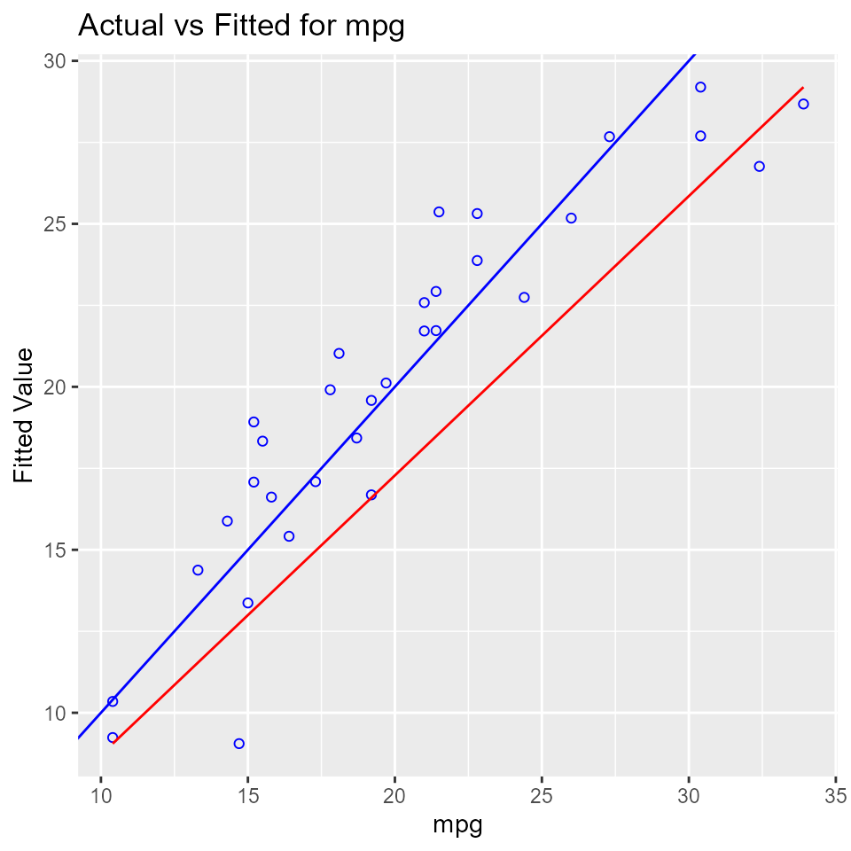
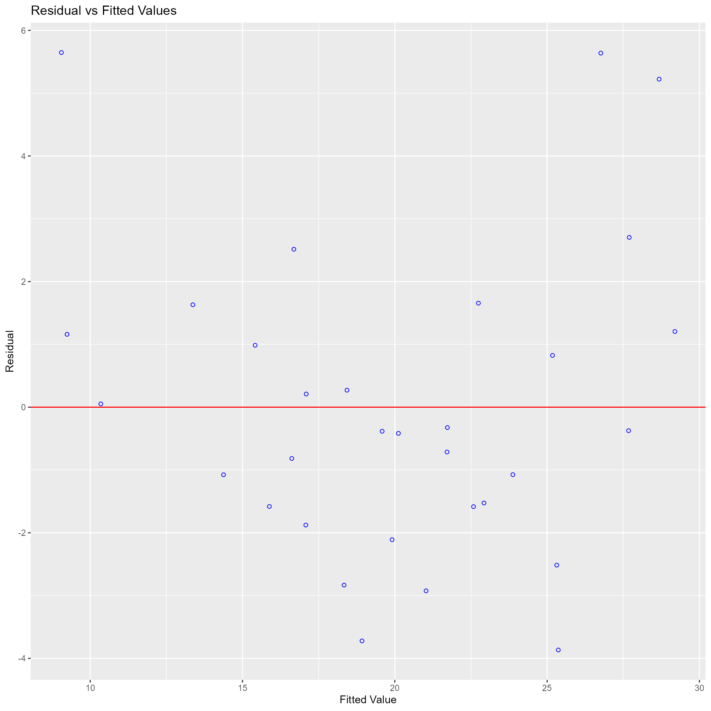
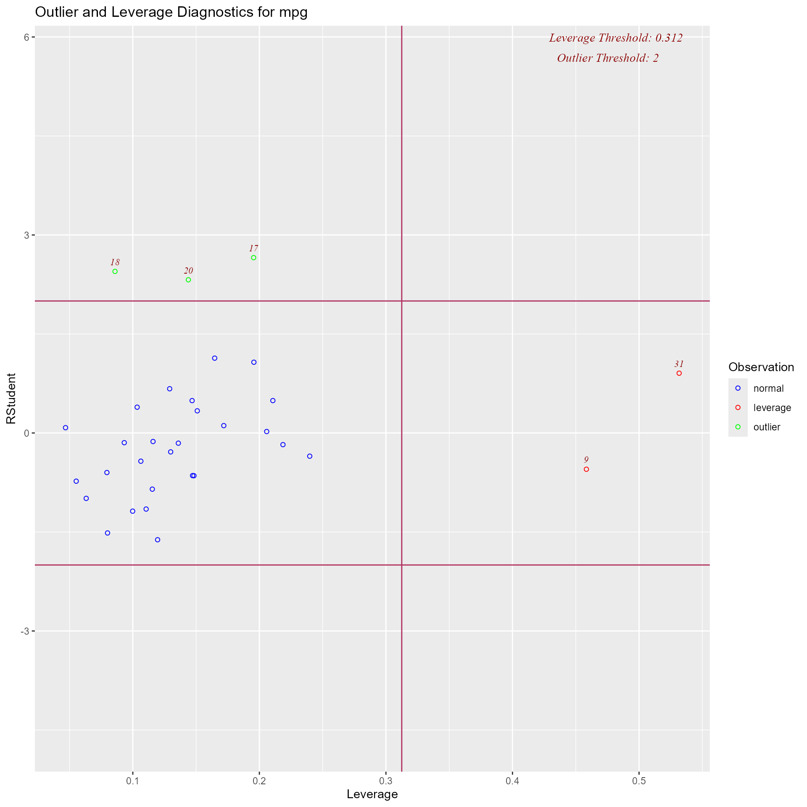
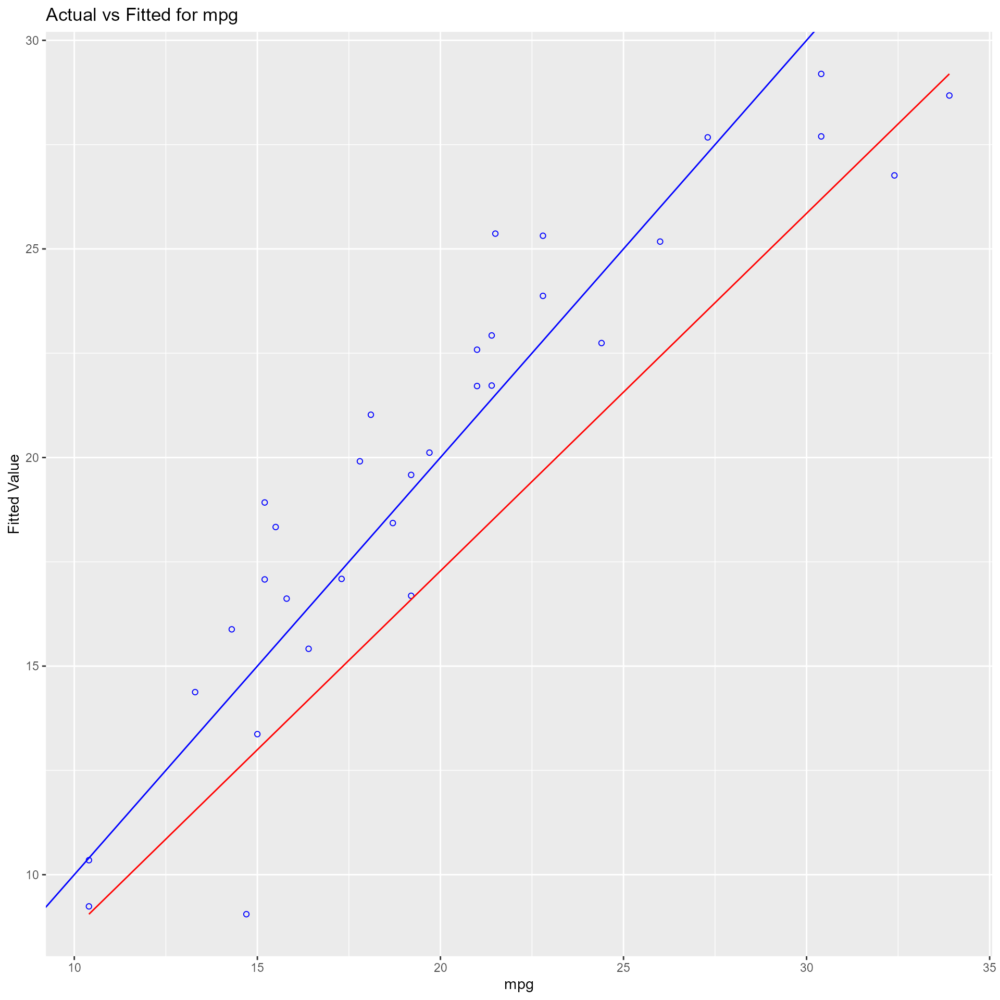
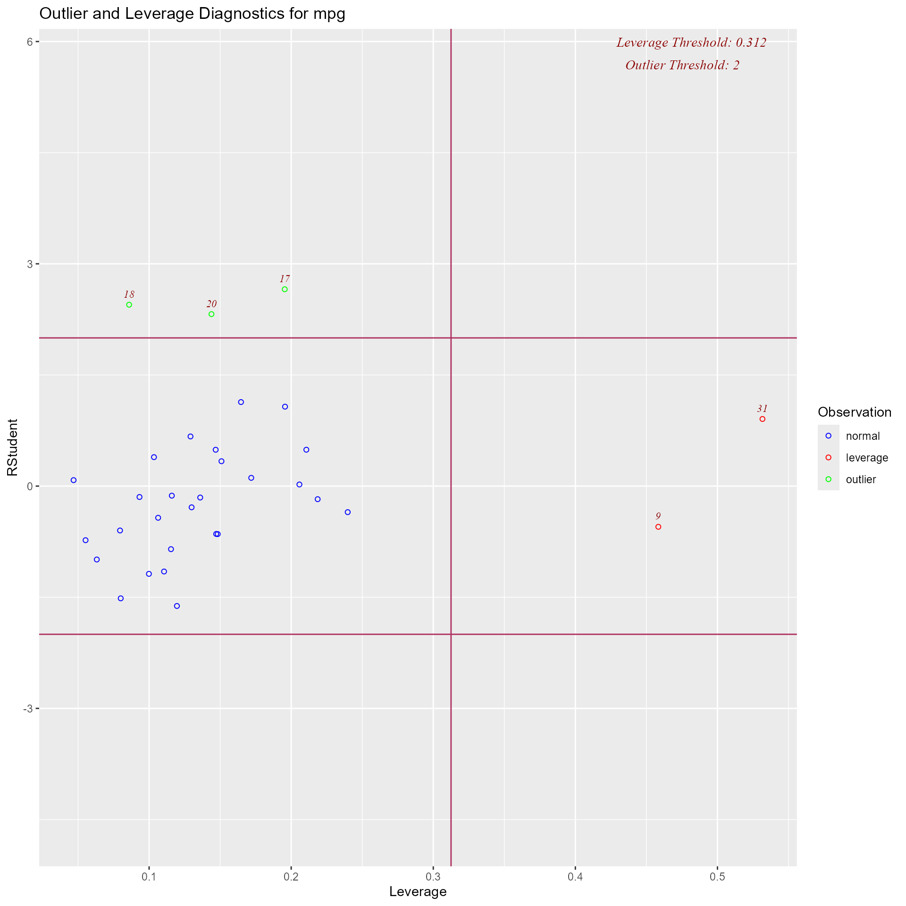
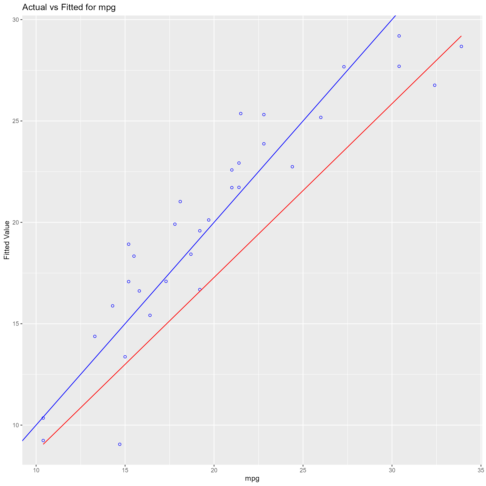
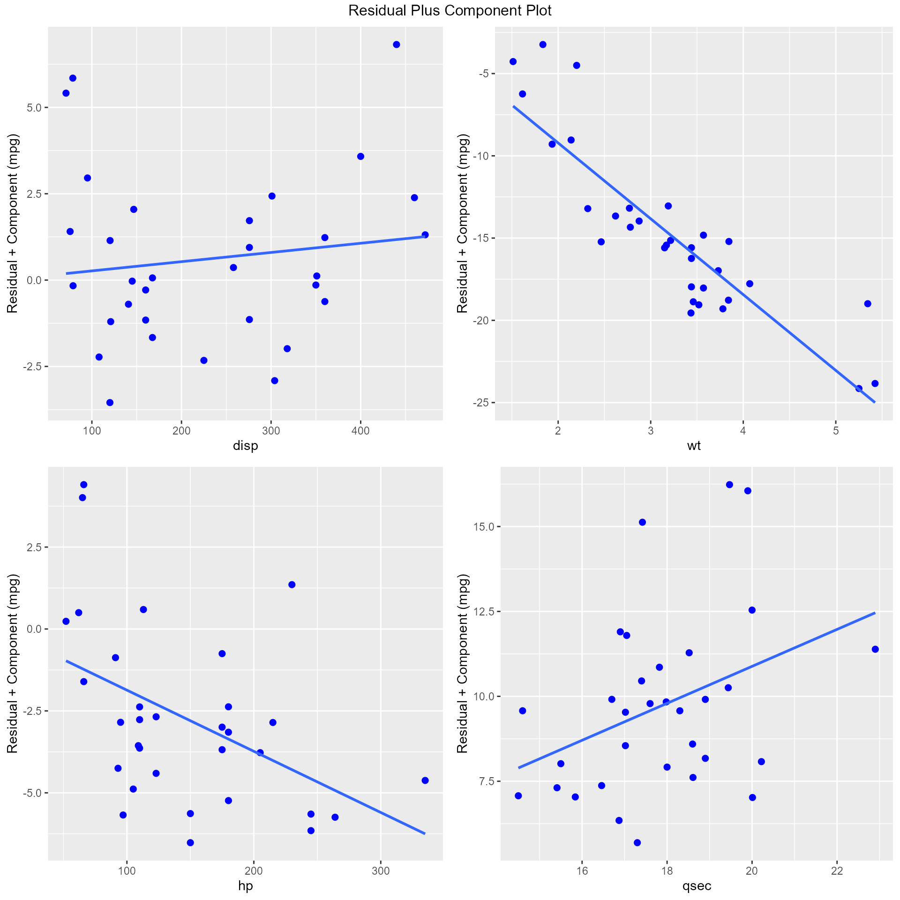

Collinearity Diagnostics, Model Fit & Variable Contribution
Source:vignettes/regression_diagnostics.Rmd
regression_diagnostics.RmdCollinearity Diagnostics
Collinearity implies two variables are near perfect linear combinations of one another. Multicollinearity involves more than two variables. In the presence of multicollinearity, regression estimates are unstable and have high standard errors.
VIF
Variance inflation factors measure the inflation in the variances of the parameter estimates due to collinearities that exist among the predictors. It is a measure of how much the variance of the estimated regression coefficient \(\beta_{k}\) is “inflated” by the existence of correlation among the predictor variables in the model. A VIF of 1 means that there is no correlation among the kth predictor and the remaining predictor variables, and hence the variance of \(\beta_{k}\) is not inflated at all. The general rule of thumb is that VIFs exceeding 4 warrant further investigation, while VIFs exceeding 10 are signs of serious multicollinearity requiring correction.
Steps to calculate VIF:
- Regress the \(k^{th}\) predictor on rest of the predictors in the model.
- Compute the \({R}^{2}_{k}\)
\[VIF = \frac{1}{1 - {R}^{2}_{k}} = \frac{1}{Tolerance}\]
model <- lm(mpg ~ disp + hp + wt + qsec, data = mtcars)
ols_vif_tol(model)## Variables Tolerance VIF
## 1 disp 0.1252279 7.985439
## 2 hp 0.1935450 5.166758
## 3 wt 0.1445726 6.916942
## 4 qsec 0.3191708 3.133119Tolerance
Percent of variance in the predictor that cannot be accounted for by other predictors.
Steps to calculate tolerance:
- Regress the \(k^{th}\) predictor on rest of the predictors in the model.
- Compute the \({R}^{2}_{k}\)
\[Tolerance = 1 - {R}^{2}_{k}\]
Condition Index
Most multivariate statistical approaches involve decomposing a correlation matrix into linear combinations of variables. The linear combinations are chosen so that the first combination has the largest possible variance (subject to some restrictions we won’t discuss), the second combination has the next largest variance, subject to being uncorrelated with the first, the third has the largest possible variance, subject to being uncorrelated with the first and second, and so forth. The variance of each of these linear combinations is called an eigenvalue. Collinearity is spotted by finding 2 or more variables that have large proportions of variance (.50 or more) that correspond to large condition indices. A rule of thumb is to label as large those condition indices in the range of 30 or larger.
model <- lm(mpg ~ disp + hp + wt + qsec, data = mtcars)
ols_eigen_cindex(model)## Eigenvalue Condition Index intercept disp hp wt
## 1 4.721487187 1.000000 0.000123237 0.001132468 0.001413094 0.0005253393
## 2 0.216562203 4.669260 0.002617424 0.036811051 0.027751289 0.0002096014
## 3 0.050416837 9.677242 0.001656551 0.120881424 0.392366164 0.0377028008
## 4 0.010104757 21.616057 0.025805998 0.777260487 0.059594623 0.7017528428
## 5 0.001429017 57.480524 0.969796790 0.063914571 0.518874831 0.2598094157
## qsec
## 1 0.0001277169
## 2 0.0046789491
## 3 0.0001952599
## 4 0.0024577686
## 5 0.9925403056Collinearity Diagnostics
model <- lm(mpg ~ disp + hp + wt + qsec, data = mtcars)
ols_coll_diag(model)## Tolerance and Variance Inflation Factor
## ---------------------------------------
## Variables Tolerance VIF
## 1 disp 0.1252279 7.985439
## 2 hp 0.1935450 5.166758
## 3 wt 0.1445726 6.916942
## 4 qsec 0.3191708 3.133119
##
##
## Eigenvalue and Condition Index
## ------------------------------
## Eigenvalue Condition Index intercept disp hp wt
## 1 4.721487187 1.000000 0.000123237 0.001132468 0.001413094 0.0005253393
## 2 0.216562203 4.669260 0.002617424 0.036811051 0.027751289 0.0002096014
## 3 0.050416837 9.677242 0.001656551 0.120881424 0.392366164 0.0377028008
## 4 0.010104757 21.616057 0.025805998 0.777260487 0.059594623 0.7017528428
## 5 0.001429017 57.480524 0.969796790 0.063914571 0.518874831 0.2598094157
## qsec
## 1 0.0001277169
## 2 0.0046789491
## 3 0.0001952599
## 4 0.0024577686
## 5 0.9925403056Model Fit Assessment
Residual Fit Spread Plot
Plot to detect non-linearity, influential observations and outliers. Consists of side-by-side quantile plots of the centered fit and the residuals. It shows how much variation in the data is explained by the fit and how much remains in the residuals. For inappropriate models, the spread of the residuals in such a plot is often greater than the spread of the centered fit.
model <- lm(mpg ~ disp + hp + wt + qsec, data = mtcars)
ols_plot_resid_fit_spread(model)
Part & Partial Correlations
Correlations
Relative importance of independent variables in determining Y. How much each variable uniquely contributes to \(R^{2}\) over and above that which can be accounted for by the other predictors.
Zero Order
Pearson correlation coefficient between the dependent variable and the independent variables.
Part
Unique contribution of independent variables. How much \(R^{2}\) will decrease if that variable is removed from the model?
Partial
How much of the variance in Y, which is not estimated by the other independent variables in the model, is estimated by the specific variable?
model <- lm(mpg ~ disp + hp + wt + qsec, data = mtcars)
ols_correlations(model)## Correlations
## -------------------------------------------
## Variable Zero Order Partial Part
## -------------------------------------------
## disp -0.848 0.048 0.019
## hp -0.776 -0.224 -0.093
## wt -0.868 -0.574 -0.285
## qsec 0.419 0.219 0.091
## -------------------------------------------Observed vs Predicted Plot
Plot of observed vs fitted values to assess the fit of the model. Ideally, all your points should be close to a regressed diagonal line. Draw such a diagonal line within your graph and check out where the points lie. If your model had a high R Square, all the points would be close to this diagonal line. The lower the R Square, the weaker the Goodness of fit of your model, the more foggy or dispersed your points are from this diagonal line.
model <- lm(mpg ~ disp + hp + wt + qsec, data = mtcars)
ols_plot_obs_fit(model)
Lack of Fit F Test
Assess how much of the error in prediction is due to lack of model fit. The residual sum of squares resulting from a regression can be decomposed into 2 components:
- Due to lack of fit
- Due to random variation
If most of the error is due to lack of fit and not just random error, the model should be discarded and a new model must be built. The lack of fit F test works only with simple linear regression. Moreover, it is important that the data contains repeat observations i.e. replicates for at least one of the values of the predictor x. This test generally only applies to datasets with plenty of replicates.
model <- lm(mpg ~ disp, data = mtcars)
ols_pure_error_anova(model)## Lack of Fit F Test
## -----------------
## Response : mpg
## Predictor: disp
##
## Analysis of Variance Table
## ----------------------------------------------------------------------
## DF Sum Sq Mean Sq F Value Pr(>F)
## ----------------------------------------------------------------------
## disp 1 808.8885 808.8885 314.0095 1.934413e-17
## Residual 30 317.1587 10.57196
## Lack of fit 25 304.2787 12.17115 4.724824 0.04563623
## Pure Error 5 12.88 2.576
## ----------------------------------------------------------------------Diagnostics Panel
Panel of plots for regression diagnostics
model <- lm(mpg ~ disp + hp + wt + qsec, data = mtcars)
ols_plot_diagnostics(model) 

Variable Contributions
Residual vs Regressor Plots
Graph to determine whether we should add a new predictor to the model already containing other predictors. The residuals from the model is regressed on the new predictor and if the plot shows non random pattern, you should consider adding the new predictor to the model.
model <- lm(mpg ~ disp + hp + wt, data = mtcars)
ols_plot_resid_regressor(model, 'drat')

Added Variable Plot
Added variable plot provides information about the marginal importance of a predictor variable \(X_{k}\), given the other predictor variables already in the model. It shows the marginal importance of the variable in reducing the residual variability.
The added variable plot was introduced by Mosteller and Tukey (1977). It enables us to visualize the regression coefficient of a new variable being considered to be included in a model. The plot can be constructed for each predictor variable.
Let us assume we want to test the effect of adding/removing variable X from a model. Let the response variable of the model be Y
Steps to construct an added variable plot:
- Regress Y on all variables other than X and store the residuals (Y residuals).
- Regress X on all the other variables included in the model (X residuals).
- Construct a scatter plot of Y residuals and X residuals.
What do the Y and X residuals represent? The Y residuals represent the part of Y not explained by all the variables other than X. The X residuals represent the part of X not explained by other variables. The slope of the line fitted to the points in the added variable plot is equal to the regression coefficient when Y is regressed on all variables including X.
A strong linear relationship in the added variable plot indicates the increased importance of the contribution of X to the model already containing the other predictors.
model <- lm(mpg ~ disp + hp + wt + qsec, data = mtcars)
ols_plot_added_variable(model)## `geom_smooth()` using formula = 'y ~ x'
## `geom_smooth()` using formula = 'y ~ x'
## `geom_smooth()` using formula = 'y ~ x'
## `geom_smooth()` using formula = 'y ~ x'
Residual Plus Component Plot
The residual plus component plot was introduced by Ezekeil (1924). It was called as Partial Residual Plot by Larsen and McCleary (1972). Hadi and Chatterjee (2012) called it the residual plus component plot.
Steps to construct the plot:
- Regress Y on all variables including X and store the residuals (e).
- Multiply e with regression coefficient of X (eX).
- Construct scatter plot of eX and X
The residual plus component plot indicates whether any non-linearity is present in the relationship between Y and X and can suggest possible transformations for linearizing the data.
model <- lm(mpg ~ disp + hp + wt + qsec, data = mtcars)
ols_plot_comp_plus_resid(model)## `geom_smooth()` using formula = 'y ~ x'
## `geom_smooth()` using formula = 'y ~ x'
## `geom_smooth()` using formula = 'y ~ x'
## `geom_smooth()` using formula = 'y ~ x'